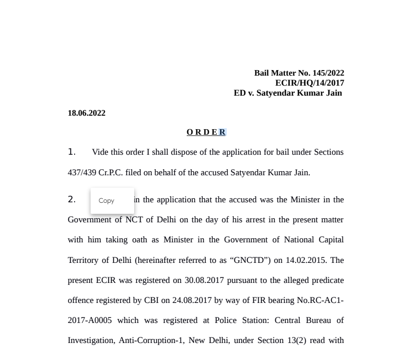

Satyendar Jain. Credit: PTI file photo
- Home /
- National
- / North and Central
- / Court refuses bail to Satyendar Jain
Court refuses bail to Delhi Health Minister Satyendar Jain in money laundering case
The court said that if granted bail, there was a possibility that Jain could tamper with evidence

A special court on Saturday dismissed a plea for bail by Delhi minister Satyendar Jain in a money laundering case being probed by the Enforcement Directorate.
Special judge Geetanjli Goel rejected the application by Jain for being without merits, considering the facts and circumstances of the case and the nature of allegations levelled against him.
The court also did not allow a plea by the accused that he was suffering from sleep apnea, a grave medical condition, which could even cause sudden death of a patient, saying no document has been produced to show medical history to seek bail.
Counsel for Jain contended that in the present case, while it is true that statements of several witnesses have already been recorded under Section 50 PMLA and ED itself has been tardy and taken considerable time, during which, the accused, if he wanted to influence the witnesses could have already done so.
"However, looking to the fact that the matter is still at the stage of investigation and the accused enjoys an influential position, it cannot be ruled out that the accused could influence the witnesses," the court said.
Jain's counsel submitted that he had appeared and recorded his statements before the investigation agency on seven occasions and cooperated with it. He also claimed the accused is a victim of witch-hunt, which led to his arrest by the ED with ulterior motives. The accused is Minister in the Government of National Capital Territory of Delhi, and he is election in-charge of Himachal Pradesh and his arrest had caused irreparable damage to his reputation.
Additional Solicitor General S V Raju, along with Special Prosecutor N K Matta, opposed the plea contending the case here was related to converting cash into something seemingly lawful and money laundering.
Jain was arrested on May 30 on allegations that between 2015 and 2016, when he was a public servant, the companies controlled him had received accommodation entries amounting to Rs 4.81 crore from shell companies against the cash transferred to Kolkata-based entry operators through a hawala route.
The CBI had already registered a disproportionate assets case against him.
Checkout latest videos
Deccan Herald News now on Telegram - Click here to subscribe
Follow us on Facebook | Twitter | Dailymotion | YouTube